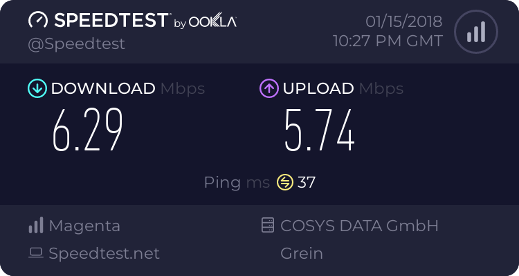
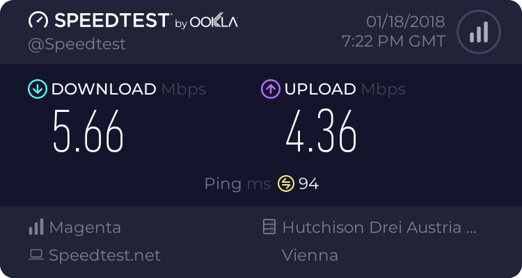

Seit der Verlängerung meines Vertrages im November wird mein Internet immer langsamer.
Hier ein Bild meiner derzeitigen Geschwindigkeit
Habe bereits alles versucht was hier immer beschrieben wird was komplett umsonst ist.
Bitte um schnellstmögliches beheben des Problemes!
Christian_E
Kannst uns vielleicht mehr Details liefern?
Wie sieht dein Empfang aus?
Was hattest du vorher für eine Geschwindigkeit? Vor allem, wie war vorher der Upload?
Wie ist die Speed in der Nacht/Früh?
Danke,
LG
Christian
Bearbeitet
von Christian_E
franky
Empfang sind 3 blaue Balken
Vor der Vertragsverlängerung hatte ich immer zwischen 13 und 20 Download, der Upload war immer bei 4-5.
Bei der Vertragsverlängerung wurde aber auch auf 30 Mbit erhöht also sollte es auch schneller sein und nicht langsamer!
Heute in der Früh hatte ich 10 Download
franky
Mein derzeitiger Speed
Christian_E
OK! Danke
In deinem Vertrag wirst du auch 10 MBit Upload haben oder?
Wenn ich mir deinen Upload ansehe, bist du bei der Hälfte, wobei der Upload aber selbst bei hoher Auslastung weiter oben sein sollte.
Du hast doch sicher den Router schon mal auf einer anderen Seite beim Fenster raus gehalten.
Ich frag das nur, weil vielleicht hast du zwar ein gutes Signal aber sollte z.B. das Signal aus zuvielen Reflexionen bestehen, dann wäre das eine mögliche Erklärung.
Kannst du mal verschiedene Positionen deines Routers testen?
Auch andere Himmelrichtungen, Räume? anderes Fenster?
Oder rausgehen damit...
Klingt jetzt vielleicht blöd aber hilft bei der Lösungsfindung.
Noch besser - klingt zwar auch blöd aber den Router einpacken und mal zum Test 2 Straßen weiter fahren und irgendwo einstecken und wieder testen....
Wäre super.
Danke
Christian
franky
Kennt ihr eure eigenen Verträge nicht die Ihr den Leuten andreht. Es gibt keine Vertrag mit 30/10 nur einen mit 30/6 und den habe, ich also ist mein Upload mehr als Gut nur der Download nicht. Rausgehen mit dem Router funktioniert nicht die Antennen sind ausen und ich habe seit über einem Jahr nichts verändert als kann die änderung nur von euch kommen.
Christian_E
Lieber Franky,
Ich bin nicht von Tmobile.
Ich bin wie Du Kunde und versuche Dir in meiner Freizeit zu helfen.
LG Christian
franky
OK das wusste ich nicht.
franky
Neue Bestleistung!
Christian_E
Wenn du schreibst, dass du Antennen hast, würde ich die trotzdem checken, denn im LTE Bereich sind wir in einem sehr dynamischen Bereich.
Da braucht sich in deiner Umgebung nur architektonisch was ändern und schon kommt das Signal anders bei dir an.
Ansonsten warten wir mal, was Tmobile morgen sagt, vielleicht gibts ja ein Problem mit einen Sendern bei dir.
Hofbau
d
Bearbeitet
von Hofbau
franky
Kathi
Hallo franky,
kannst du uns bitte mal deine PLZ schicken? Dann schau ich gerne nach, ob vielleicht eine allgemeine Störung in deiner Umgebung besteht.
Danke dir!
LG Kathi
franky
Meine PLZ 4323
Kathi
Danke dir, franky. Eine allgemeine Störung ist nicht bekannt.
Hast du im Zuge der Verlängerung auch eine neue Hardware genommen und den Tarif geändert? Und welche Einstellungen hast du schon versucht?
LG Kathi
franky
Habe bei der Verlängerung den Tarif von 20/5 auf 30/5 erhöht. Seit dem sind die Probleme. Habe schon alles versucht was hier in der Community steht.
Kathi
Hattest du vorher eine Netzfixierung? Wenn ja, welche?
Und wie schaut es aktuell aus? Hast du es auch schon mit einer Fixierung auf 3G getestet? Grundsätzlich kannst du mit dieser Fixierung auch bis zu 42 Mbit/s erreichen. Es wäre daher wirklich interessant, wie viel mit 3G bei dir möglich ist.
Der Wechsel auf den höheren Tarif sollte keine Auswirkungen haben. Ganz im Gegenteil. Da höhere Werte inkludiert sind, sollte auch mehr durchkommen anstatt weniger. ?
Und eine letzte Frage noch. Wann hast du die Verlängerung denn durchgeführt?
LG Kathi
franky
Wie bereits geschrieben habe alles durch probiert auch eine Fixierung auf 3G.
Verbindung mit 3G ist aber nicht möglich, werde nach ca. 10 Sekunden aus dem Netz geworfen und erde nicht mehr verbunden und ja ich habe den Router bereits neugestartet, einen Reset durchgeführt und ihn auch an einem anderen Ort versucht.
Die Vertragsverlängerung wurde im November durchgeführt.
franky
Und weiter gehts!
Armin
Netztechnisch gibt es keine Beeinträchtigungen. Eventuell liegt es an der Simkarte. Du kannst mal die Simkarte austauschen. Eine neue Simkarte erhälst du im Shop, sollte dir der Kartentausch verrechnet werden, dann melde dich bei uns und wir werden es dir einmalig gutschreiben.
LG, Armin
franky
OK habe eine neue Simkarte bestellt, laut Mitarbeiter des Live Chats werden mir 10€ für den Simkarten tausch verrechnet, da fragt man sich warum ich eine Simkartenpauschale jährlich zahle wenn ich dann bei defekten Simkarten nochmal für einen Tausch 10€ zahlen soll.
Welche Veränderung sollte die neue Simkarte jetzt bewirken? Kann nicht glauben dass damit die Download geschwindigkeit erhöht wird.
Armin
Frank, ich hab dir geschrieben, dass wir dir die Kosten nachträglich auf der Rechnung gutschreiben werden. Bitte gib uns einfach in der Community Bescheid, sobald du es gemacht hast. Wenn die Leistung der alten Simkarte nicht mehr 100% ist, dann könnte es eine Verbesserung bewirken. Wie gesagt netztechnisch sieht alles in Ordnung aus.
Wir müssen nun sämtliche Möglichkeiten ausschließen.
LG, Armin
franky

Armin
Also hat sich der Kartentausch nicht viel gebracht?
Wir müssen uns deinen Fall genauer anschauen. Dazu brauchen wir deine Daten, schreib uns bitte über social Media.
LG, Armin
franky
Die Karte wurde noch nicht getausch.
Werde es bekannt geben sobald dies erledigt ist.
Armin
Alles klar Franky! Wir werden alles mögliche versuchen und hoffen, dass es besser wird.
LG, Armin
franky
Hallo,
Seit der Verlängerung meines Vertrages im November wird mein Internet immer langsamer.
Hier ein Bild meiner derzeitigen Geschwindigkeit
Habe bereits alles versucht was hier immer beschrieben wird was komplett umsonst ist.
Bitte um schnellstmögliches beheben des Problemes!
franky
So neue Simkarte wurde aktiviert. Hier einige Tests
Mit alter Simkart
Mit der Simkarte vom Handy
Mit der alten Simkarte nach der Handysimkarte
Mit der neuen Simkarte nach der Aktivierung

Keine Änderung zwischen neuer und alter Simkarte aber mit der Handysimkarte funktioniert es einwandfrei!
10€ für die aktivierung der Simkarte werden auch verrechnet.
franky
Armin
Vielen Dank für dein ausführliches Feedback. Jetzt kann nur noch unsere Technik Hotline weiterhelfen. Es dürfte netztechnisch ein Problem sein.
- Armin
franky
Das kann nicht die Lösung sein, mit der Technik Hotline habe ich schon vor diesem Beitrag telefoniert und hatte auch keine Lösung!
franky
Habe wie empfohlen nochmal mit der Technikhotline Telefoniert und zwar am 19.1 zweimal. Die Kollegen meinten die Performance wäre nicht ausreichen und würden sich um eine Lösung bemühen und sich am 22.1 oder 23.1 wieder melden bezüglich eine Lösung. Wie erwartet hatte sich niemand gemeldet, also telefonierte ich wieder mit der Technik und der Kollege von heute meinte dass meine Performance gut ist und dass er kein Problem feststellen kann. Er konnte auch nicht nachvollziehen welche Lösung mir sein Kollege vorschlagen wollte da dieser im System dieselben Antworten wie er dokumentierte und schrieb dass die Performance des Downloads gut ist und kein Problem vorliegt.
Ich habe aber immer noch das Problem das der Download schlecht ist und niemand das Problem erklären noch beheben kann. Da in der Community vermehrt Wöchentlich Probleme mit dem HomeNet auftauchen würde ich sagen das Problem liegt eindeutig bei T-Mobile und nicht bei den Kunden. Aber niemand weiß von dem Problemen und keiner will es zugeben geschweige den eine Lösung finden.
Armin
Vielen Dank für das Feedback! Bitte dokumentier dein Ergebnis über einen längeren Zeitraum 2-3 Wochen, sollten die Werte tatsächlich miserabel sein, dann kann unser Techniker eine Kulanz anbieten. Ohne ordentlich Dokumentation ist das nicht möglich.
LG, Armin
IT-Freak
Ich bin da schlimmeres gewöhnt
franky
Dieses T-Mobile wird immer besser!!
Online Filme sehen meist nicht möglich, update für Spiele auf der PS dauern Tage und online Spielen eine Katastrophe.
Aber zum Glück Bezahle ich für 30/5 die Nachts wenn jeder schläft auch wunderbar funktionieren und einiger maßen gut wenn ich in der Arbeit bin.
Hier einige Tests der letzten Monate
Christian_E
Also für mich sieht das ganz klar nach einer
Auslastung des Senders
aus.
Der Upload passt ja immer gut.
Ich glaub nicht, dass da der Fehler bei dir liegt.
Und mit der Handykarte funktioniert es deshalb besser, weil die Handy SIM anders priorisiert wird.
LG
Christian
franky
Mir ist egal ob der Sender Ausgelastet ist oder nicht ich Bezahle 30 Mbit also sollten wenigsten 50-100% davon ankommen.
Zum Glück wird gerade LWL bei mir verlegt dann wird gewechselt und ich habe diesen Schrott endlich wieder los.
Christian_E
Verstehe ich schon.
Sollte ja nur der Versuch einer Erklärung sein.
Rexalius2000
Ich habe am Abend auch nur 1-4 MBIT.Ist nun mal die Netzauslastung die am Abend oder am Wochenende herrscht.Mit dem muss man Leben wenn man ein Mobiles Internet hat.
Ist so wie am Abend auf der Autobahn wenn alle heim wollen da gibt es auch Stau und so ist es auch auf der Datenautobahn.
Bearbeitet
von Rexalius2000
Christian_E
Rexalius - das ist eine gute Einstellung - macht manches leichter
Gerade wenn es um das Streaming geht, kann das zeitweise aber bitter werden.
Aber ja - das ist der Unterschied zum Kabel - im mobilen Internet gibt es große Dynamik.
Der Vergleich mit der Autobahn beschreibt es wohl am besten.
LG
Christian
Rexalius2000
Es geht natürlich nichts über Internet das mit Kabel kommt und stabil,schnell(meistens wie beworben) ist.Mobiles Internet heißt ja nicht umsonst mobil obwohl die Provider das gerne als Homenet vermarkten.Bin froh das ich nicht zu 100% auf so einen Zugang angewiesen bin und auf VDSL Internet 100/30 nebenbei vertrauen kann.
Bearbeitet
von Rexalius2000
Christian_E
Dann bist du in einer glücklichen Lage aber vor allem am Land gibt es oft nur schwache Leitungen.
Da kann LTE gut unterstützen, manchmal ist es sogar die einzige Möglichkeit vernünftiges Internet zu bekommen.
Die Hybrid Lösung ist da echt toll, sofern man mit einer ADSL Telefonleitung zumindest einen guten Anschluss hat.
franky
An meinem Handy habe ich auch immer fast volle Leistung wenn mein Homenet nicht richtig funktioniert. Also kann es nicht ausschließlich von einer Auslastung kommen. Das Homenet wird bewusst so ausgebremst damit alle auf dem Handy mit voller Geschwindigkeit Ihr Datenvolumen verbrauchen können und dann schön viel Geld für mehr ausgeben.
Bearbeitet
von franky
Christian_E
Sagen wir mal so - die Bandbreitenoptimierung ist bei HomeNet oder generell beim stationären LTE Internet natürlich ein Thema und wird unterschiedlich geregelt.
Der Vertrag für das Mobilphone hat immer eine höhere Priorität als das stationäre Internet.
Die Sache mit dem Datenvolumen sei jetzt mal dahingestellt.
es tut mir leid zu hören, dass die Downloadwerte bei dir wieder ein Thema sind. Ich kann verstehen, dass du damit nicht glücklich bist.
Hast du dich zu diesem Sachverhalt schon mit unseren HomeNet-SpezialistInnen ausgetauscht?
Du erreichst sie unter 0676-2000 und dann 3 und nochmals die 3. Sie haben die notwendigen Tools um deinen Fall nachstellen zu können und sind auch die einzigen, die über Kulanzen entscheiden könnten. Einen Versuch ist es auf jeden Fall wert.
LG Andrea
franky
Hallo,
Das Problem bei dem ganzen ist das die Downloadwerte sind nicht wieder ein Thema sondern das sind sie dauerhaft.
Ich hatte bisher noch keinen Monat wo ich sagen könnte das die Downloadwerte den ganzen Tag in Ordnung wären.
Ich werde mich auch nicht wieder mit den HomeNet-Spezialisten herumärgern und meine Zeit verschwenden wenn dabei wie beim letzten mal keine Lösung für mein Problem gefunden werden kann und meiner Meinung nach auch keine wirkliche Lösung gefunden werden will.
Die einzigen Bemühungen die ich mir machen werden ist die Kündigung meines HomeNet Vertrages!!
das ist aber schade, dass dir die KollegInnen keine Kulanz oder Lösung anbieten konnten. Das ist wirklich unüblich.
Wir haben über diesen Kanal hier keine Einsicht in Kundendaten und können daher auch keine Lösungen erarbeiten. Weshalb dir wirklich nur anraten kann, die KollegInnen nochmals zu kontaktieren.